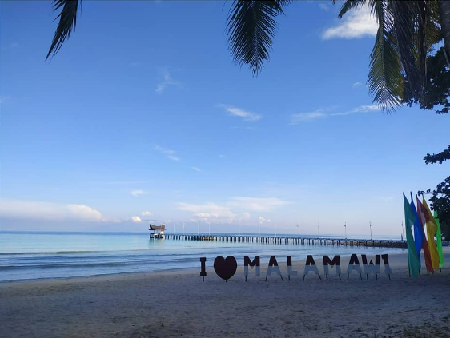

This is the place where I post some of my adventure.

Malamawi Beach, Isabela Province
It was a great white beach and one of the hiddem gem in Mindanao. You should include this in your list as you will be amaze and enjoy in their clear and turquiose water. And this is not crowded as you need to make a reservation at the department of tourism.
Pink Beach of the Great Santa Cruz Island, Zamboanga
The pink highlights in the sand come from crushed organ pipe corals (Tubipora musica) that, once blended with the other crushed white corals, look pink in broad daylight. It is highly likely to find the actual coral being washed ashore when walking along the beach.
Casa Antonio Glamp Camp, Calatagan, Batagas
My first glamping experience was made memorable in Casa Antonio Glamp Camp. Thanks to the staff who were always there to assist us in everything that we need.
Paseo Del Mar, Zamboanga City
I love going to this place at night because of the sea breeze. A famous place in Zamboanga city to dine in with family and friends. the food served by the different restaurants are delicious and affordable.
White Water Rafting, Cagayan de Oro
White water rafting is an outdoor activity wherein you ride an inflatable raft to navigate through a river. It's done in done in Cagayan River, which separates Cagayan de Oro and Bukidnon. This activity is ideal for beginners and pros alike.
Payao, Zamboanga Sibugay
The Municipality of Payao is a 3rd class municipality in the province of Zamboanga Sibugay, Philippines. According to the 2020 census, it has a population of 34,952 people.
 Sarah Jean Trajano
Sarah Jean Trajano